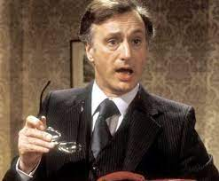
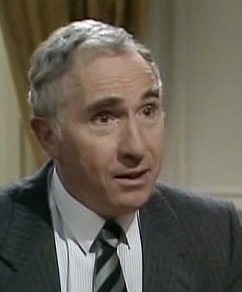
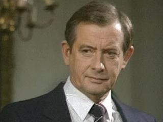

Introduction
Jim Hacker:Who else is in this Department?
Sir Humphrey:Well briefly, sir, I am the Permanent Under Secretary of State, known as the Permanent Secretary. Woolley here is your Principal Private Secretary. I too have a Principal Private Secretary and he is the Principal Private Secretary to the Permanent Secretary. Directly responsible to me are ten Deputy Secretaries, 87 Under Secretaries and 219 Assistant Secretaries. Directly responsible to the Principal Private Secretaries are plain Private Secretaries, and the Prime Minister will be appointing two Parliamentary Under-Secretaries and you will be appointing your own Parliamentary Private Secretary.
(From S01E01, Open government, Yes, Minister)Jim Hacker
The Right Honourable Lord Hacker of Islington
First appearance: "Open Government"Last appearance: "The Tangled Web"
Occupation:
Lecturer
Journalist
Minister for Administrative Affairs
Prime Minister of The United Kingdom of Great Britain and Northern Ireland
Sir Humphrey
Sir Humphrey Appleby GCB KBE MVO MA (Oxon)
First appearance: "Open Government"Last appearance: "The Tangled Web"
Occupation:
Permanent Secretary / Cabinet Secretary
Aliases:Humpy
Title:Sir
Sir Bernard
Sir Bernard Woolley GCB, MA (Oxon)
First appearance: "Open Government"Last appearance: "The Tangled Web"
Occupation:
Principal Private Secretary, Permanent Secretary
Title:Sir